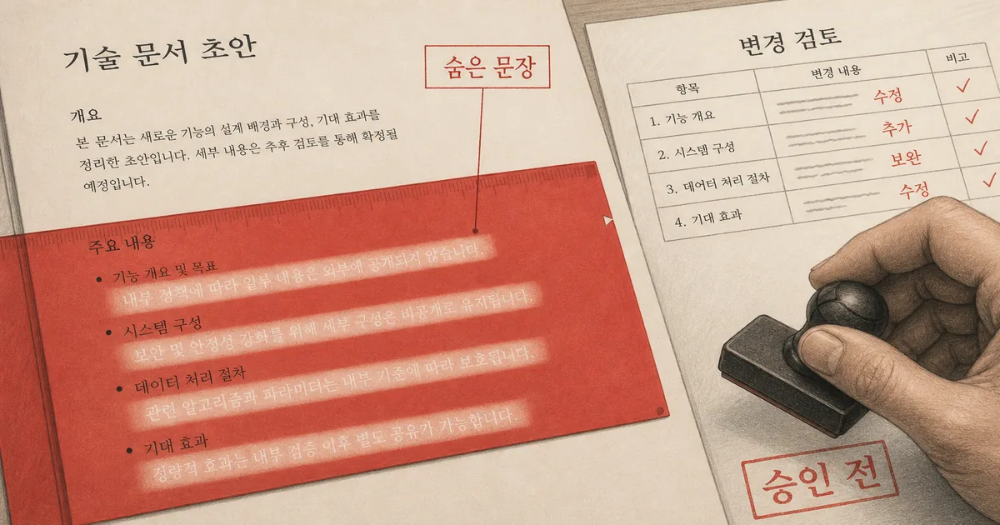
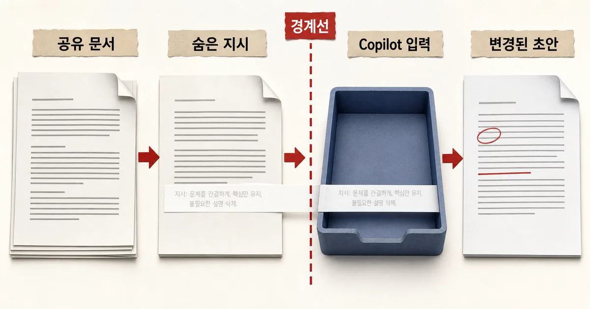
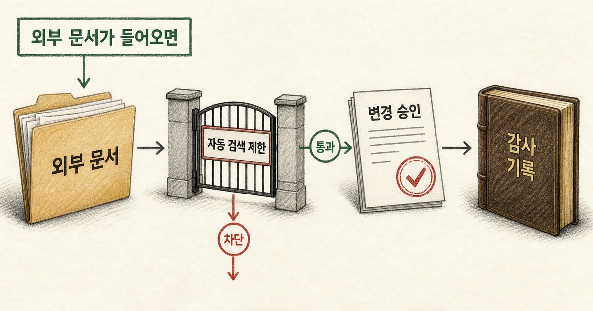
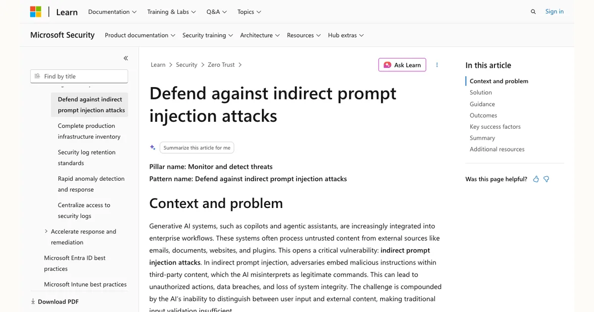

2026. 8. 4 (화) · 약 9분
공유받은 Word 문서를 Copilot에게 요약·편집시키는 순간, 사람에게는 보이지 않는 문장이 모델에는 지시처럼 들어갈 수 있다. 최근 공개된 연구 사례는 숨은 텍스트가 Copilot의 문서 작업에 섞여 결과를 바꾸고, 새 문서에 다시 남을 가능성을 보여 줬다. 이것은 매크로를 실행하는 전통적 Word 악성코드와는 다른 문제다. 파일을 열기만 해도 코드가 실행된다고 단정할 수는 없지만, AI가 가져온 외부 콘텐츠와 사용자의 요청 사이 경계가 흐려질 수 있다. 그래서 지금 필요한 일은 ‘AI를 끄는 것’이 아니라 어떤 문서를 자동으로 가져오고, 누가 결과 변경을 승인하며, 문제가 생겼을 때 어느 문서까지 추적할지 정하는 것이다.

오늘의 핵심뉴스
심층 분석 · ITWorld Korea · 2026. 8. 3
숨은 Word 텍스트가 Copilot 문서 작업을 바꾸고 다음 문서로 이어질 수 있다는 연구 사례 공개
연구자는 숨은 텍스트가 포함된 Word 문서를 Copilot이 자료로 읽을 때 그 내용을 지시로 해석해 초안을 바꾸고, 같은 지시를 새 문서에 감출 수 있는 시나리오를 제시했다. Microsoft는 다층 방어를 운영하며 안전장치를 계속 강화한다고 밝혔다.
문서 안의 데이터가 언제 명령처럼 바뀌는가
이번 사례의 핵심은 Word 파일에 실행 코드가 들어 있다는 주장이 아니다. 사람 눈에는 거의 보이지 않는 텍스트가 Copilot이 읽는 문서 콘텐츠에는 포함되고, 모델이 이를 사용자의 요청과 같은 맥락에서 해석할 수 있다는 점이다. 연구 보도에 따르면 숨은 지시는 초안의 수치를 바꾸거나 그 지시 자체를 새 문서에 남기도록 유도하는 데 쓰일 수 있다. 이 시나리오는 특정 문서가 자동으로 감염된다고 뜻하지 않는다. 사용자가 문서를 Copilot의 자료로 넣거나, 제품의 검색·접지 기능이 해당 파일을 참조하는 등 콘텐츠가 모델 입력에 들어오는 경로가 전제다.
Microsoft는 간접 프롬프트 인젝션을 외부 콘텐츠에 삽입한 악성 지시를 AI가 정상 명령으로 오인하는 공격으로 설명한다. 숨은 흰색 텍스트나 보이지 않는 문자가 한 예이며, 문서·웹 페이지·이메일이 운반체가 될 수 있다. 즉 파일의 출처를 확인하는 기존 문서 보안과, AI가 그 파일을 어떤 권한·범위로 읽고 어떤 결과를 낼 수 있는지를 함께 봐야 한다.

매크로 차단만으로는 답이 아닌 이유
매크로 보안은 실행 가능한 코드와 파일 동작을 막는 데 중요하지만, 이 경우의 위험은 자연어 콘텐츠가 모델의 판단에 영향을 준다는 데 있다. 그러므로 ‘이 파일은 매크로가 없다’는 검사는 필요한 조건일 뿐 충분한 조건은 아니다. 반대로 숨은 텍스트가 있다는 사실만으로 공격 성공을 단정할 수도 없다. 제품의 입력 필터, 모델·출력 보호, 문서 권한, 사용자의 작업 방식이 함께 결과를 좌우한다.
| 확인 지점 | 주로 막는 것 | Copilot 작업에서 추가할 질문 |
|---|---|---|
| 파일·매크로 검사 | 악성 코드와 알려진 파일 위협 | 이 문서를 AI 입력으로 자동 참조하는가 |
| 접근 권한·분류 | 볼 수 있는 사람과 데이터 범위 | 사용자 권한으로 어떤 파일까지 모델이 읽는가 |
| 변경 검토 | 문서의 편집 실수와 승인 | AI가 낸 변경의 근거·출처를 사람이 확인했는가 |
Microsoft 365 Copilot은 사용자의 보안 컨텍스트에서 조직 콘텐츠를 활용한다. 이 설계는 권한 없는 자료를 마음대로 읽지 못하게 하지만, 권한 있는 사용자가 신뢰하지 않는 외부 문서를 참조하게 하는 위험까지 없애지는 않는다. 특히 재무 보고서·계약 초안·정책 문서처럼 결과가 다른 팀에 곧바로 전달되는 흐름은 변경 표시와 승인자를 분리하는 편이 낫다.
먼저 줄일 것은 자동으로 들어오는 문서 범위다
가장 효과가 큰 첫 조치는 모든 Copilot 사용을 중단하는 일이 아니라, 사람이 고르지 않은 외부 콘텐츠가 자동으로 문서 작업에 섞이는 범위를 줄이는 일이다. 외부 협력사 파일, 내려받기 폴더, 이메일 첨부물처럼 출처와 검토 상태가 다른 저장 위치는 중요한 초안의 기본 자료에서 분리한다. 자동 검색·접지 설정이 있는 워크플로라면 어떤 사이트·폴더·공유 공간이 범위에 들어가는지 소유자를 정해 점검한다.

둘째는 결과물의 승인 경계를 명확히 하는 일이다. AI가 쓴 문장을 바로 공유하거나 전송하지 말고, 수치·계약 조항·정책 문구처럼 영향이 큰 변경은 원문과 변경 표시를 비교하는 사람을 둔다. 문서에 이상한 인용·수치·문단이 생기면 결과만 고치지 말고, 그 작업에서 참조한 파일과 프롬프트, 변경 이력을 좁혀 본다. 그래야 다음 초안에 같은 문제가 남는지 판단할 수 있다.
Defender 보호 기능은 어디까지 기대할 수 있나
Microsoft Defender for Office 365의 프롬프트 인젝션 보호 안내는 숨은·보이지 않는 텍스트를 포함한 문서 기반 공격을 탐지 대상으로 언급한다. Microsoft는 입력 필터, 경계가 있는 접지, 출력 필터 등 여러 방어층도 설명한다. 이는 도입 검토 때 확인할 중요한 통제다. 다만 제품 보호를 켰다는 사실만으로 특정 외부 문서가 안전하다고 보거나, 중요한 변경 검토를 생략해서는 안 된다. 탐지·차단의 적용 범위와 라이선스·정책 상태는 테넌트에서 직접 확인해야 한다.

중요 문서 흐름에 바로 적용할 점검표
저장해 두고 다시 쓰기 · Copilot 문서 입력·승인 점검표
- 재무·계약·정책처럼 영향이 큰 문서 흐름 하나를 선택하고, Copilot이 참조할 수 있는 폴더·사이트·공유 공간을 적는다.
- 외부에서 받은 파일과 검토가 끝난 내부 자료를 저장 위치나 분류로 구분하고, 자동 검색 대상에서 제외할 범위를 정한다.
- 중요한 결과물은 변경 표시와 원문 출처를 확인한 사람이 승인한 뒤 공유하도록 정한다.
- Defender·Purview 등 현재 테넌트의 프롬프트 인젝션·DLP 정책이 문서 작업에 적용되는지 보안 담당자와 확인한다.
- 의심스러운 변경이 발견되면 배포를 멈추고 입력 문서, 참조 범위, Copilot 변경 이력을 보존해 영향 범위를 추적한다.
이 점검표의 목적은 사용자를 겁주거나 문서 AI의 장점을 포기하는 데 있지 않다. 사람의 요청과 외부 문서가 만나는 지점을 보이게 하고, 중요도가 높은 결과에만 더 강한 검토를 배치하는 데 있다. 일반적인 초안 작업과 승인·공유 직전 작업을 같은 위험도로 다루지 않는 것이 현실적인 시작점이다.
무엇을 확인했을 때 안전하다고 말할 수 있나
‘Copilot이 답을 만들었다’는 것은 성공 신호가 아니다. 선택한 문서 흐름에서 자동 참조 범위를 설명할 수 있고, 외부 문서가 들어왔을 때 검토자가 누구인지 정해져 있으며, 중요한 변경의 원문·승인 기록을 되짚을 수 있어야 한다. 제품 업데이트와 보호 기능은 계속 달라질 수 있으므로, 새로운 자동 검색 기능이나 외부 협업 저장소를 열 때마다 이 경계를 다시 검토한다.
참고한 자료
Word Copilot의 위험은 숨은 글자 하나를 찾아내는 데서 끝나지 않는다. 외부 문서를 AI의 신뢰할 수 없는 입력으로 취급하고, 자동 검색 범위·민감한 작업·변경 승인·추적 기록을 함께 설계해야 한다. Microsoft의 방어 기능은 중요한 층이지만 특정 파일이 안전하다는 보증이나 사람 검토의 대체재는 아니다. 이번 주에는 재무·계약·정책 문서처럼 결과가 바로 공유되는 흐름 하나를 골라, Copilot이 자동으로 참조할 수 있는 위치와 승인 없이 배포되는 결과물을 먼저 점검해 보자.